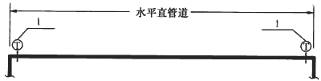
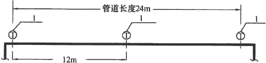
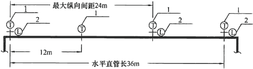
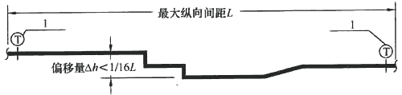
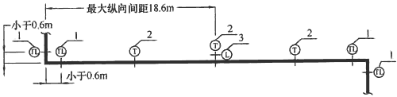
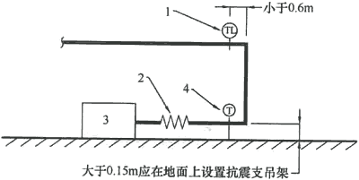

8．3 抗震支吊架设计
8．3．1 每段水平直管道应在两端设置侧向抗震支吊架(图19)。
8．3．2 当两个侧向抗震支吊架间距大于最大设计间距时，应在中间增设侧向抗震支吊架。例如：刚性连接金属管道长为24m，侧向抗震支吊架最大间距12m。首先于两端加设侧向支撑，再依次按12m设置侧向支撑(图20)。

图19 水平直管段抗震支吊架设置
1-抗震支吊架

图20 水平直管段中部增设抗震支吊架示意
1-抗震支吊架
8．3．3 每段水平直管道应至少设置一个纵向抗震支吊架，当两个纵向抗震支吊架距离大于最大设计间距时，应按本规范第8．2．3条要求间距依次增设纵向抗震支吊架。例如：刚性连接金属管道长为36m，按最大24m的间距依次设置纵向支撑，直至所有支撑间距均满足要求(图21)。

图21 水平直管段纵向抗震支吊架设置示意
1-抗震支吊架；2-纵向抗震支吊架
8．3．5 刚性连接的水平管道，两个相邻的加固点间允许纵向偏移，水管及电线套管不得大于最大侧向支吊架间距的1／16，风管、电缆梯架、电缆托盘和电缆槽盒不得大于其宽度的两倍(图22)。

图22 刚性连接水平管道纵向偏移示意
1-抗震支吊架
8．3．6 水平管线在转弯处0．6m范围内设置侧向抗震支吊架。若斜撑直接作用于管线，其可作为另一侧管线的纵向抗震支吊架(图23)。例如：纵向抗震支吊架最大间距24m，侧向抗震支吊架最大间距12m，则双向抗震支吊架距下一纵向抗震支吊架间距为：（24＋12）／2＋0．6＝18．60m。

图23 水平管线转弯时抗震支吊架设置示意
1-侧向抗震支吊架；2-抗震支吊架；3-纵向抗震支吊架
8．3．7 当水平管线通过垂直管线与地面设备连接时，管线与设备之间应采用柔性连接，水平管线距垂直管线600mm范围内设置侧向支撑，垂直管线底部距地面大于0．15m应设置抗震支撑(图24)。
8．3．9 要求不得将抗震支吊架安装于非结构主体部位，如轻质墙体等。
8．3．14 当立管通过套管穿越结构楼层时，套管可限制立管在水平方向的位移，可作为水平方向的四向抗震支撑使用。管道中的附件如阀门等，当其质量大于25kg时，为保证系统的安全性，应设置侧向及纵向抗震支吊架。

图24 管线与设备连接时抗震支吊架设置示意
1-侧向抗震支吊架；2-柔性连接；3-地面设备；4-抗震支吊架